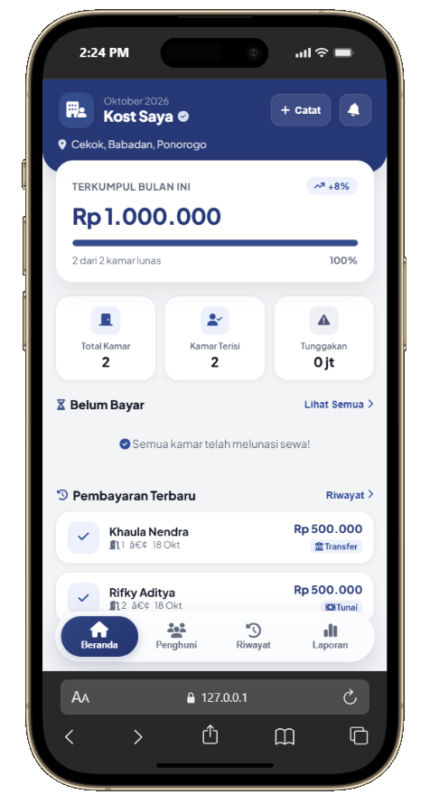
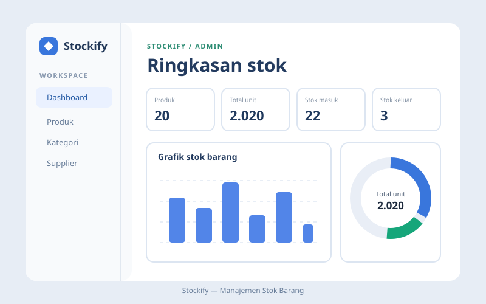
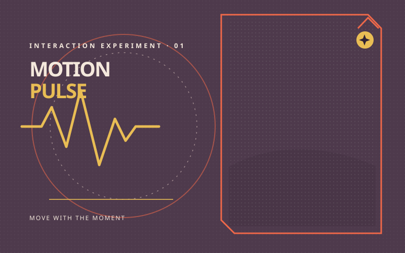
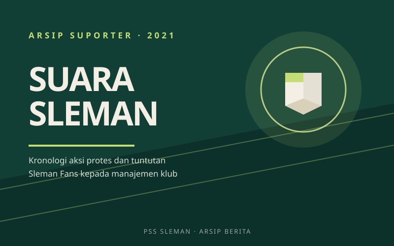
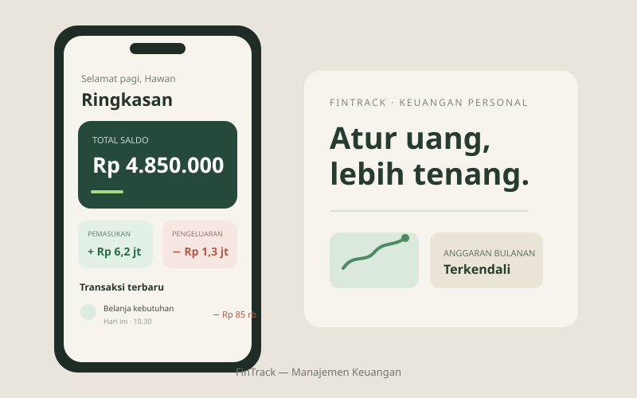

Tersedia untuk proyek freelance dan kolaborasi
Web digital yang terasa jelas.
Dibuat untuk manusia.
Full-stack developer yang membangun produk web dari antarmuka hingga backend. Saya memperhatikan hierarki, jarak, dan detail interaksi kecil agar produk terasa rapi dan mudah digunakan.
Full-stack · UI/UX · Web
Tentang
Saya
Saya memandang desain dan kode sebagai satu hal yang sama. Keputusan visual harus bisa diterjemahkan menjadi perilaku yang jelas di browser.
Saya sedang menempuh pendidikan SMK sambil membangun aplikasi web dengan Laravel dan JavaScript modern, serta menyusun CSS yang modular. Saya memperhatikan kontras, navigasi keyboard, dan detail interaksi agar produk mudah digunakan.
- Status
- Pelajar SMK
- Fokus
- Antarmuka, sistem desain, dan aksesibilitas
- Keahlian
- HTML semantik, CSS modern, Tailwind CSS, JavaScript, React, Laravel, MySQL
Profil singkat
Biodata
- Nama lengkap
- Muhammad Akbar Fikriansyah
- Status
- Pelajar SMK
- Tempat lahir
- Kudus
- Tanggal lahir
- 01 Oktober 2009
- Riwayat pendidikan
- -RA Muslimat Cekok
-MI Maarif Cekok
-SMK PGRI 2 Ponorogo - Pengalaman Proyek
- Membangun proyek web dan mengembangkan keterampilan pemrograman selama menempuh pendidikan SMK jurusan RPL.
- Fokus
- UI/UX, web dev, dan aksesibilitas
- 01. UI/UX
- 02. Web dev
- 03. Sistem desain
- 04. Aksesibilitas
Proyek pilihan
Aplikasi web, eksperimen interaksi, dan arsip berita suporter.
-
YANI KOST · DASHBOARD KAMAR TERISI2 / 2Semua kamar aktif

PEMASUKAN BULAN INIRp 1 jtPembayaran tercatatYani Kost
Mobile web untuk manajemen sewa kost
Dashboard mobile untuk memantau kamar, pembayaran sewa, dan ringkasan pemasukan bulanan.
-

Stockify
Sistem pencatatan gudang dan inventaris
Pencatatan stok multi-kategori dengan riwayat perubahan dan peringatan otomatis saat stok menipis.
-

Motion Pulse
Eksperimen interaksi
Gerak elemen yang mengikuti kursor dengan interpolasi halus, dibuat tanpa framework.
-

PSS Sleman — Suara Suporter
Website berita · Kronologi aksi protes 2021
Merangkum aksi protes Sleman Fans terhadap manajemen PSS Sleman pada akhir 2021, di tengah kekecewaan atas performa tim di awal Liga 1 2021/2022 serta persoalan tata kelola dan komunikasi klub.
-

FinTrack — Manajemen Keuangan
APK · Aplikasi manajemen keuangan personal
Catat pemasukan dan pengeluaran, kelompokkan transaksi, lalu pantau saldo serta anggaran bulanan lewat satu ringkasan yang mudah dipahami.
Mari bicara
Terbuka untuk pembuatan website, sistem internal, dan kolaborasi dari desain ke kode. Ceritakan konteks proyek Anda secara singkat.